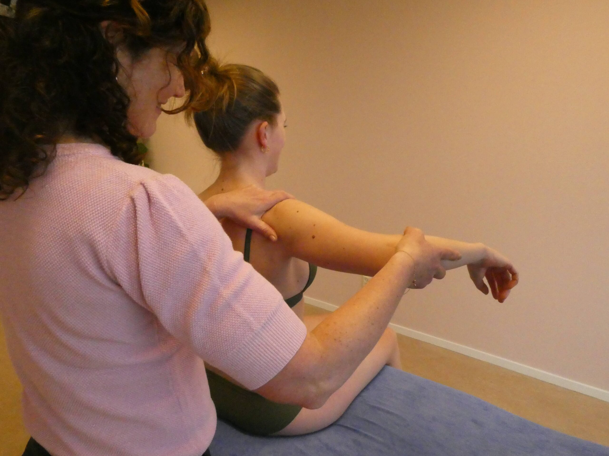

Wij zijn lid van de beroepsvereniging NVAMG — de Nederlandse Vereniging van Artsen voor Musculoskeletale Geneeskunde.
Er is geen verwijsbrief nodig om een afspraak te maken. Wilt u overleggen dan kunt u het contactformulier invullen, de praktijk bellen op 030-212 93 00 of een email sturen naar info@beweegartsen.nl.
Beroepsprofiel artsen Musculoskeletale geneeskunde (MSK) →
Musculoskeletale geneeskunde (MSK) is een medisch vakgebied gericht op diagnostiek, niet-operatieve behandeling en secundaire preventie van klachten van het houding- en bewegingsapparaat.
De praktijk gebruikt manuele behandeltechnieken, voorlichting en coaching, oefenadviezen en — via samenwerking met rugpoli.nl — minimaal invasieve pijnbestrijdingstechnieken.
Voor onze artsen en verwijzers — de actuele leidraden van de NVAMG voor de meest voorkomende musculoskeletale klachten.

team · Beweegartsen